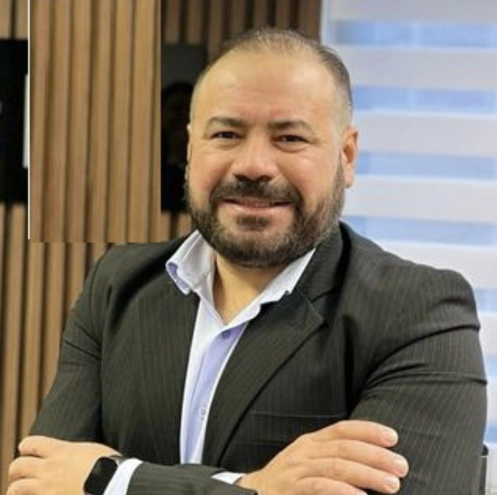

🌱 Desenvolver a horta
Manter um espaço de cultivo organizado, sustentável e utilizado como ambiente de aprendizado.
O projeto Horta do 3º Vendas vai além do cultivo de alimentos. Nossa proposta é transformar o trabalho realizado pelos alunos em uma experiência de aprendizado, colaboração e construção de novas oportunidades para a turma.
A Horta do 3º Vendas foi criada com o objetivo de unir educação, sustentabilidade e empreendedorismo em uma única iniciativa.
A ideia é que os alunos participem de todas as etapas do projeto, desde o preparo da terra e o cultivo até a organização, divulgação e comercialização dos produtos.
Dessa forma, a horta também se transforma em um espaço para desenvolver responsabilidade, trabalho em equipe, planejamento e iniciativa, colocando em prática conhecimentos que fazem parte da formação dos estudantes.
Um dos principais objetivos da Horta do 3º Vendas é utilizar a produção como uma forma de arrecadação de recursos para a turma.
Os alimentos cultivados poderão ser destinados à venda, e o valor arrecadado será utilizado para apoiar os próximos projetos, atividades e planos definidos pelos alunos.
Mais do que conseguir recursos, queremos mostrar que uma ideia simples pode se transformar em uma iniciativa organizada, capaz de gerar resultados através do trabalho coletivo.
Transformar parte da produção da horta em recursos para futuras atividades e projetos da turma.
Utilizar os recursos arrecadados de maneira planejada, contribuindo para novas experiências dos alunos.
A participação de diferentes pessoas é fundamental para que a ideia possa sair do papel.

O projeto também conta com a participação do professor Aurélio Azevedo, contribuindo para o desenvolvimento da proposta junto aos alunos.
A construção da horta envolve diálogo, planejamento e acompanhamento. A participação do professor ajuda a turma a transformar a ideia inicial em ações concretas, mantendo o projeto organizado e conectado aos objetivos da escola.
Manter um espaço de cultivo organizado, sustentável e utilizado como ambiente de aprendizado.
Utilizar a produção da horta como uma possibilidade de arrecadação para futuras ações da turma.
Incentivar a colaboração entre os alunos e dividir responsabilidades durante o desenvolvimento do projeto.
Desenvolver conhecimentos relacionados ao cultivo, organização, planejamento e empreendedorismo.
Transformar o resultado do trabalho em novas experiências e atividades para os estudantes.
Incentivar atitudes sustentáveis e mostrar que pequenas ações podem gerar resultados maiores.
Cada etapa da Horta do 3º Vendas representa uma oportunidade de aprender, colaborar e construir algo que possa continuar crescendo junto com a turma.